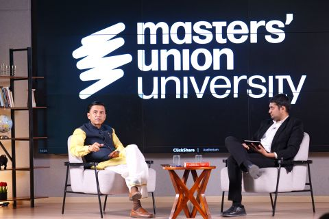
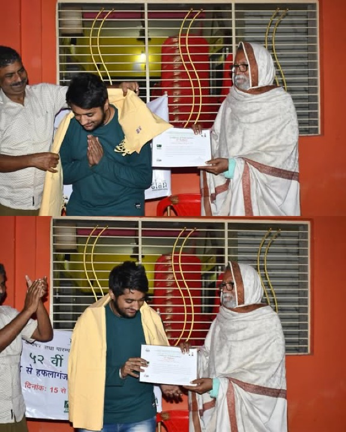
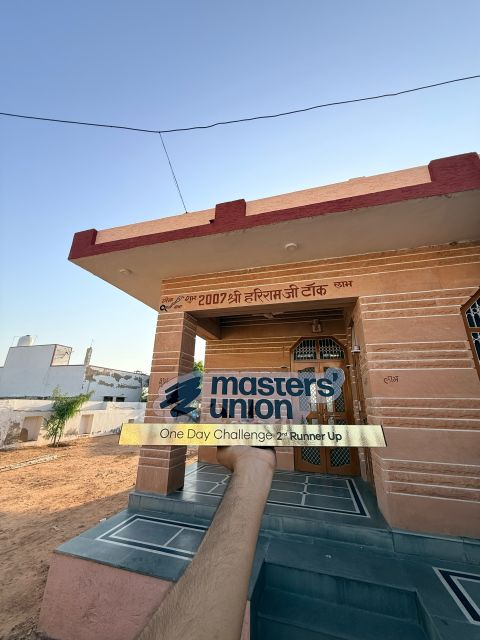

01 / 2022 / Telangana
Where the line starts
Class XII, 98.03%, top 1% in Telangana; Best Student Award among 1,000+ students
Platform 1 / Yatra Express / Summer 2027
“How do we build a stronger India?” That question has taken me across all 28 states.
Strategy / Founder's Office / Policy / Grassroots

Scroll to depart ↓
The Yatra Express, plain version
How do we build a stronger India? That question has taken me across all 28 states of India. Summer 2027 internship, March to May 2027.
Class XII, 98.03%, top 1% in Telangana; Best Student Award among 1,000+ students
Digital Marketing Intern, Icon Creations, Cairo, Jun to Jul 2023: ranked among top-performing interns within six weeks
Governance Intern, Collector Office, Narayanpet, Telangana, Aug to Sep 2023: coordinated district-level execution of the Rs 12,000 crore welfare scheme benefiting approximately 4 million citizens
25+ high-level government review meetings and 50+ field visits
Jagriti Yatra 2023 yatri, an 8,000 km entrepreneurship train journey; in 2026 hosted its founder for a fireside at Masters' Union

BBA, Indian Institute of Sustainability, Ahmedabad, CGPA 7.81/10 (Top 5%), Jun 2022 to Jun 2025
Organiser, TEDxIIS: secured the official TEDx licence, launched the institution's first TEDx, 250+ attendees, Rs 2 lakh in sponsorships
AIESEC in Ahmedabad, Senior Manager and Core Committee VP Recruitments, Aug 2023 to Jul 2024: recruited 100+ members, won Best Team Leader and Best Team Awards, closed 30+ IR partnerships, secured 10+ approvals
Rotaract Club Ahmedabad, Secretary then Vice President, Mar 2022 onward: 15+ initiatives improving outcomes for 5,000+ beneficiaries, mentored 200+ students
Conducted grassroots innovation research across 25+ villages in rural Nagaland and Bihar, Jan 2024
Project Lead, 51st Shodhyatra, SRISTI, Nagaur, Rajasthan, Jun 2024
Directed a Rs 3 lakh rural innovation programme across 12 villages, 20+ stakeholder engagements, a 140 km expedition
Presented learnings from Shodh Yatra at ICCG 5, IIM Ahmedabad, 28 to 30 Jan 2025

Policy Research Intern, NITI Aayog, New Delhi, Aug to Oct 2024
Recommended counter-cyclical trade policies by analysing 60+ years of agricultural, pricing and import datasets
Benchmarked agricultural trade policies across 10+ countries to find structural gaps in India's pulse ecosystem
Led a 10-member organising team for the Kashmir Festival with Union Minister Amit Shah as guest, and contributed to the Raj Bhavan MoU ceremony where 7 MoUs were signed across 5 universities, Gandhinagar, Sep 2024
Crowdfunded Rs 2.5 lakh across multiple platforms to attend the HPAIR Harvard Conference
Won Round 1 of the Harvard HPAIR Impact Challenge among a 40-country cohort, Feb 2025

Elected Vice President, Careers Club, Masters' Union (1 of 466 applicants)
goSTOPS One Day Challenge: 2nd Runner Up among 90 teams
Policy Gazette 2026, IIFT Delhi: 3rd place
US$300 LaunchLab grant

Summer 2027 internship, March to May 2027. Let's build something.